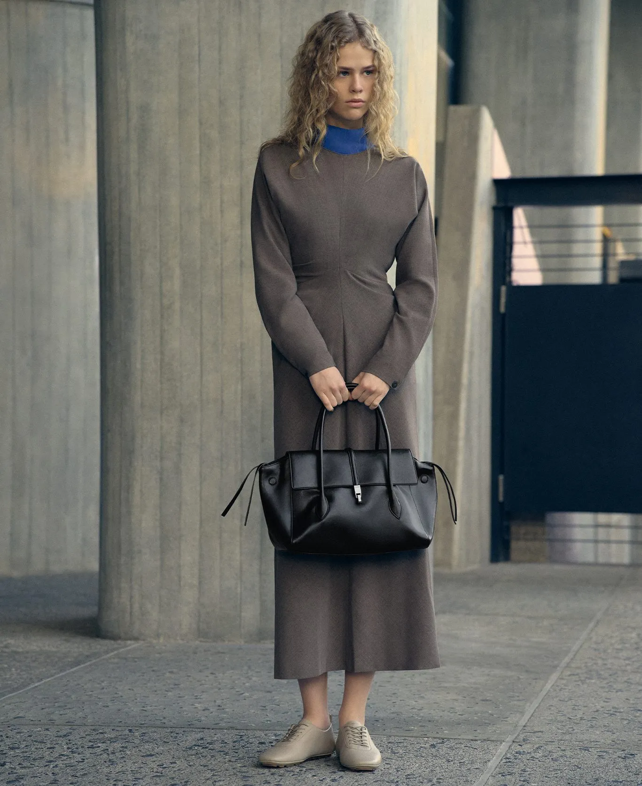

<meta name="viewport" content="width=device-width, initial-scale=1">

<style>
  /* Rows of a centred 2:3 image with a short caption in the side column.
     Add --right or --left to each row's copy to place it; alternate them
     for a zig-zag rhythm down the page. */
  .side-copy {
    --sc-gutter: 40px;
    margin-bottom: 100px;
    font-family: proxima-nova, "Helvetica Neue", Arial, sans-serif;
    color: #000;
    background: #fff;
    -webkit-font-smoothing: antialiased;
  }

  .side-copy *,
  .side-copy *::before,
  .side-copy *::after {
    box-sizing: border-box;
  }

  .side-copy__row {
    display: grid;
    grid-template-columns: 1fr 30% 1fr;
    grid-template-areas: "left media right";
    align-items: center;
  }

  .side-copy__row + .side-copy__row {
    margin-top: 32px;
  }

  .side-copy__media {
    grid-area: media;
  }

  /* Natural ratio once loaded, 2:3 placeholder before */
  .side-copy__img {
    display: block;
    width: 100%;
    height: auto;
    aspect-ratio: auto 2 / 3;
    object-fit: cover;
    background: #efefef;
  }

  .side-copy__text {
    margin: 0;
    font-size: 14px;
    line-height: 1.45;
  }

  .side-copy__text--right {
    grid-area: right;
    max-width: 440px;
    padding: 0 var(--sc-gutter) 0 100px;
  }

  .side-copy__text--left {
    grid-area: left;
    max-width: 445px;
    padding: 0 52px 0 80px;
  }

  /* Tablet */
  @media (max-width: 1023px) {
    .side-copy {
      --sc-gutter: 28px;
    }

    .side-copy__row {
      grid-template-columns: 1fr 40% 1fr;
    }

    .side-copy__text--right {
      padding-left: 32px;
    }

    .side-copy__text--left {
      padding-right: 32px;
      padding-left: var(--sc-gutter);
    }
  }

  /* Mobile: each image, then its copy, at 90% width */
  @media (max-width: 767px) {
    .side-copy__row {
      grid-template-columns: 1fr;
      grid-template-areas:
        "media"
        "left"
        "right";
    }

    .side-copy__row + .side-copy__row {
      margin-top: 56px;
    }

    .side-copy__img {
      width: 90%;
      margin: 0 auto;
    }

    .side-copy__text--right,
    .side-copy__text--left {
      width: 90%;
      max-width: none;
      margin: 0 auto;
      padding: 28px 0 0;
    }
  }
</style>

<section class="side-copy">
  <div class="side-copy__row">
    <div class="side-copy__media">
      
    </div>
    <p class="side-copy__text side-copy__text--right">
      A short caption beside the image, for example naming the product in the shot and one thing that makes it
      right for the person wearing it.
    </p>
  </div>

  <div class="side-copy__row">
    <div class="side-copy__media">
      
    </div>
    <p class="side-copy__text side-copy__text--left">
      The next row puts its caption on the other side, so the copy zig-zags down the page around the centred
      images.
    </p>
  </div>
</section>
